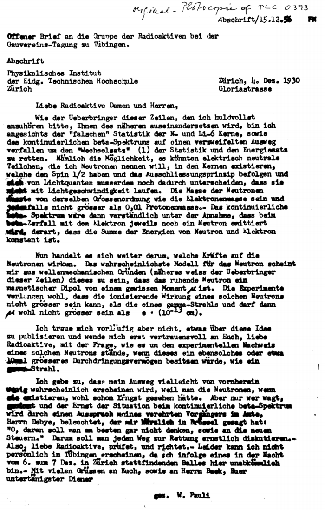
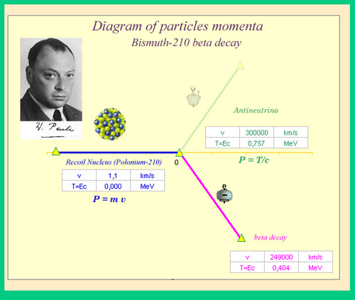

Pragmatismo
Falibilistas
Falibilistas
Desacreditando os céticos: Peirce, James, Dewey
Peirce
- É possível conhecer o mundo
- Conhecer não é prerrogativa de um sujeito individual mas da coletividade.
- Conhecimento é um processo.
- Verdades provisórias
Rejeitando as teses de Descartes
- Nós não temos como começar pela duvida fundamental, pela busca de princípios indubitáveis. Pois temos muitas crenças indubitáveis.
- Qualquer que seja o "inquiry" , incluindo o científico se inicia a partir destas crenças, isto é dos nossos " pré-conceitos" ou conceitos prévios pois fornecem o necessário "background", suporte e orientação
- O processo de conhecimento é racional não porque teria uma fundação mas sim porque é um processo auto-corretor - Sellars
- A dúvida não é um hábito mas sim a privação de um hábito que é superada por um novo hábito
A crença é uma regra de ação, cuja aplicação pode implicar em dúvida posterior e posterior reflexão. Constituem ao mesmo tempo ponto de escala e ou novo ponto de partida para o pensamento -Peirce
Rejeitando as teses de Descartes
- O conhecimento se torna objetivo e avança apenas com a comunicação social. A intersubjetividade tem papel central no processo da investigação e de conhecimento e da garantia da racionalidade.
- Falibilismo não é ceticismo, mas sim a afirmação de que a atividade de investigação científica deve ter mecanismos de auto correção ( falseabilidade).
- Pierce cria a metáfora de que contrariamente à cadeia linear das inferências indutivas, o conhecimento forma um cabo de fios emaranhados tal que rompimento de único fio não é suficiente para destruir o corpo de conhecimento (dúvidas e ou experimentos cruciais) .
Processo e teoria da investigação:Inquiry
- A finalidade da ciência é aprender a lição que o universo tem a ensinar. Ciência não se confunde com conhecimento acumulado.
- A busca pela verdade é um valor , um ethos, não uma propriedade e ou qualidade da Ciência.
- Abdução,Indução e Inferencias.
- Hipoteses e especulações nascem da interação com o mundo e não apenas de nossas cabeças. Por isto a interação com o mundo empirico é fundamental para todo o conhecimento
- Indução e inferência são apenas um dos instrumentos, mas não são a única forma de conhecer
Conhecimento e Aprendizagem em Dewey
Experiência é ponto de partida do "Inquiry".
- Experiência na acepção de experiência vivencial com o mundo natural e social.
- Ela é transacional, mediada socialmente e não pode ser categorizada simplesmente como racional ou emocional
- Experiência é o ponto de partida do conhecimento e aprendizagem. (Neutralidade?)
Conhecimento e verdade em Dewey
Fases do processo de conhecimento
- Sentimento de que algo está faltando diante de algum fato que se apresenta como indeterminado. O que gera a dúvida.
- Um problema deve ser especificamente formulado. Problemas não são preexistentes.
- Uma hipotese é construída utilizando de forma imaginativa tanto ideias teóricas como fatos empíricos, que auxiliam para prever as consequências de várias operações (teóricas e ou experimentais).
- Hipotese em ação. Raciocínio sobre os significados envolvidos, avaliação de suas implicações, ou possíveis contradições.
- Possível retorno a fase anterior, reformulando as hipoteses.
- A "verdade" ou o conhecimento é a conversão de uma situação indeterminada para outra determinada após o teste e avaliação das hipóteses
- O conhecimento científico só é considerado como tal se os objetos por ele descritos e explicados são igualmente compreendidos por toda uma comunidade/sociedade. Intersubjetividade e objetividade.
Crenças e problematização
“Crença não é um modo momentâneo da consciência, é um hábito mental que permanece algum tempo e que é, pelo menos em grande parte, inconsciente; tal como outros hábitos, ela encontra-se (até surgir alguma surpresa que inicia a sua dissolução) perfeitamente auto-satisfeita. A dúvida é de um gênero completamente contrário. Não é um hábito, mas sim a privação de um hábito. Ora, a privação de um hábito, a fim de ser alguma coisa, tem de ser uma condição de atividade errática que, por alguma via, necessita ser eliminada através do hábito.” (PEIRCE, 1998a: 336-7)
Cognição e Realismo.
Cognição
- Conhecemos e inferimos o que e como pensamos pelo ato de explicar de forma mais ou menos plausível o mundo exterior
- A intuição é sempre uma intuição educada e não a priori pois é fruto das experiências sensíveis. O que se chama de intuição é frequentemente a automatização inconsciente de objetos da cognição.
- Fundamentos, i e, princípios fundamentais são resultados do processo do conhecimento e não a origem ou raiz do conhecimento.
Realismo e Falibilismo
- Posição realista: No mundo existem coisas cujas características e propriedades independem de nossas opiniões sobre elas.
- A realidade afeta nossos sentidos de acordo com leis regulares e apesar de que as sensações de cada indivíduo seja tão diferente quanto as relações de cada um com os objetos
- A partir das leis da percepção e pela razão é possível afirmar como as coisas realmente são para qualquer homem.
- E se tivermos experiência suficiente e razões suficientes pode-se chegar a uma conclusão única e verdadeira.
Verdade Provisória
- É uma verdade provisória verdadeira?
- A mecânica clássica é verdadeira?
- A genética mendeliana é verdadeira?
- Mudanças e debates sobre a teoria Evolucionária
Impacto nos Epistemólogos da ciência
- O conhecimento científico necessita de um período de Ciência Normal.
- O conhecimento é científico quando falseável, isto é sujeito ao questionamento e posterior correção
- O processo de Inquiry envolve a existência de grupos em disputa, o conflito de programas de pesquisa é parte importante no estabelecimento da verdade ( mesmo que provisória)
A ciência em ação.
Neutrino
-
DNA
Neutrino
Carta de Pauli

Translation of the open letter sent by Wolfgang Pauli to Lise Meitner and Hans Geiger and a group of radioactive people at the Gauverein meeting in Tübingen.
Physics Institute of the ETH
Gloriastrasse
Zürich
Dear Radioactive Ladies and Gentlemen,
As the bearer of these lines, to whom I graciously ask you to listen, will explain to you in more detail, because of the "wrong" statistics of the N- and Li-6 nuclei and the continuous beta spectrum, I have hit upon a desperate remedy to save the "exchange theorem" (1) of statistics and the law of conservation of energy. Namely, the possibility that in the nuclei there could exist electrically neutral particles, which I will call neutrons, that have spin 1/2 and obey the exclusion principle and that further differ from light quanta in that they do not travel with the velocity of light. The mass of the neutrons should be of the same order of magnitude as the electron mass and in any event not larger than 0.01 proton mass. - The continuous beta spectrum would then make sense with the assumption that in beta decay, in addition to the electron, a neutron is emitted such that the sum of the energies of neutron and electron is constant.
But so far I do not dare to publish anything about this idea, and trustfully turn first to you, dear radioactive people, with the question of how likely it is to find experimental evidence for such a neutron if it would have the same or perhaps a 10 times larger ability to get through [material] than a gamma-ray.
I admit that my remedy may seem almost improbable because one probably would have seen those neutrons, if they exist, for a long time. But nothing ventured, nothing gained, and the seriousness of the situation, due to the continuous structure of the beta spectrum, is illuminated by a remark of my honored predecessor, Mr Debye, who told me recently in Bruxelles: "Oh, It's better not to think about this at all, like new taxes." Therefore one should seriously discuss every way of rescue. Thus, dear radioactive people, scrutinize and judge. - Unfortunately, I cannot personally appear in Tübingen since I amindispensable here in Zürich because of a ball on the night from December 6 to 7. With my best regards to you, and also to Mr. Back, your humble servant
W. Pauli
Detectando o Neutrino
DNA: quem descobriu o DNA
Mescher e Levene
Friedrich Messcher em 1869 descobriu o que chamou de nucleina, mais tarde chamada de ácido nucleico e posteriormente ácido desoxyribonucleico, "DNA".A nucleina era encontrada nas células brancas do sangue. Analisando a nucleína, Mescher esperava encontrar componentes de proteínas.
Mas a análise levou a conclusão de se tratar de algo estruturalmente similar às proteínas, mas rico em fósforo e com propriedades químicas diferentes e resistentes a proteolisys ( digestão de proteinas).
Levene em 1919 após vários estudos propôs um modelo para os ácidos nucleícos, onde eles seriam compostos de vários nucleotideos formados por apenas uma das quatro bases contendo nitrogênio. uma molécula de açucar, e um grupo fosfato.
Levene propõe que os nucleotideos sigam uma ordem G-C-T-A-G-C-T-A
Regra de Chargaff: hereditariedade e composição
- Genes compostos por DNA :Oswald Avery et al em 1944
- Chargaff investiga genes de diferentes espécies e infere uma regra.
- O número total de purinas A-G igual ao número total de Pirimidinas T-C
Linus Pauling- Watson-Crick- Rosalind Franklin
- Avanços na cristalografia
- Avanços na construção de modelos tri dimensionais de estruturas moleculares baseadas nos ângulos e distâncias das ligações moleculares. -Linus Pauling.
- Pauling três meses antes propõe um modelo para o DNA um hélice tripla. Modelo errado mas inspirador
- Watson, Crick de posse dos dados de Rosalind Franklin vão propor o modelo da dupla hélice.
DNA: quem descobriu o DNA
Hipóteses, Indução e Inferências
- Nos dois exemplos qual o papel das hipóteses e modelos?
- Qual o papel da observação e do experimento?
- O que significa : a teoria sempre precede o experimento?
- O que se pode dizer sobre verdades provisórias, e qual o papel nas duas "descobertas" ?
- O que significa objetividade e qual o papel do sujeito?
- São os dois resultados universais?
- Vocễ classificaria estas descobertas como ciência normal ou revolucionária?
- Como fica a questão da falseabilidade?
Experimentos e as teorias por trás deles
- Diferença entre observação e experimentação.
- Observação a olho nu.
- Observação telescópio
- Microscópio, microscópio eletrônico, Fluorescencia
- Aceleradores
- Tomografia
- ultrassonografia
A eterna briga: quem vem primeiro?
- O experimento é só um auxílio para o pensamento, tal como os cálculos. O pensamento precisa sempre e necessariamente precedê-lo se é para ele ser significativo. Não existe um modo de investigação empírico, no sentido usual do termo. Um experimento precedido não antecedido pela teoria ,( pensamento) isto é por uma ideia, tem a mesma relação com a pesquisa científica que a barulheira da criança tem com a música.
- Existem surpresas experimentais que geram novas teorias.
- Mas nenhum experimento é orfão de teoria, modelos e ou conjecturas.
- Experimentos são instrumentos de investigação e não são únicos
- Observações só ganham significados quando precedidas de modelos, concepções, hipoteses.
Dialogando com o objetos do conhecimento.
Modelos e teorias e Observação
Fenômenos como observação fatual interpretada e representada
A realidade existe mas os fenômenos no sentido filosófico são criações e construções de nossa mente.
Fenomenos são abstrações criadas que estabelecem um diálogo com a natureza. para possibilitar o entendimento
Experimentos e observações que precedem as teorias
A teoria dos instrumentos de observação. A teoria ondulatória como exemplo.
Surpresas são conflitos com o que sabemos
Uma afirmação realista:A natureza não é feita segundo nossas interpretações
Realidade: o que nos dizem as teorias científicas?
A 1 : as teorias científicas nos dizem como o mundo é, tanto em seus aspectos observáveis quanto "inobserváveis".(realismo)
A2: as teorias nos dizem como o mundo é, somente em seus aspectos observáveis ( instrumentalismo)
A3 : as teorias nos dizem como o mundo é em seus aspectos observáveis e com o mundo pode ser em seus aspectos inobserváveis ( empirismo construtivista)
Realismo Científico
Do que estamos falando
- Teorias estabelecidas.
- Modelos e teorias em desenvolvimento.
- O realismo de Pierce e Dew e suas verdades provisórias.
- O argumento sem milagres: A prática científica é bem sucedida em suas previsões e suas consequencias práticas, tecnológicas etc..
Prática científica
- A prática científica é bem mais do que Teorias Científicas.
- A prática científica carrega a história do conhecimento.
- A prática científica carrega teorias métodos e valores científicos.
- A prática científica carrega os critérios de demarcação e a dinâmica da objetividade
- È o que define a verdade provisória.
Empirismo construtivo
- Só temos conhecimento do observável ( a olho nu)
- Entidades e processos inobserváveis podem existeir, mas nós nunca saberemos
- As teorias podem ser verdadeiras mas nunca saberemos.
- As teoria podem não obstante ser aceitas como adequadas empiricamente
- A adequação empírica é o objetivo da ciência. (a verdade é uma quimera)
- Nossas teorias salvam os fenômenos.
Realismo e ontologia
Realismo de Entidades
- A verdade de nossas teorias se demonstra pela manipulação prática na criação de fenômenos.
- A ciência não é bem sucedida porque representamos melhor o mundo, mas porque podemos intervir no mundo, por exemplo criando novos fenômenos e novas tecnologias
Realismo Estrutural
- A estrutura é mantida através de mudanças científicas.
- Teoria ondulatória como exemplo
- As teorias de colisão
- A estrutura genética:o mecanismo genético